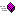

 Абсолютное (Abs) |
Возвращает абсолютное значение числа. |
| АКосинус (Acos) | Возвращает числовое значение между 0 и Пи радианами для значения x, лежащего в диапазоне от -1 до 1. |
| АСинус (Asin) | Возвращает числовое значение между -Пи/2 и Пи/2 радианами для значения x, лежащего в диапазоне от -1 до 1. |
| АТангенс (Atan) | Возвращает числовое значение между -Пи/2 и Пи/2 радианами. |
| АТангенс2 (Atan2) | Возвращает числовое значение от -Пи до Пи, представляющее угол точки (x, y). Это выраженный в радианах угол, отсчитываемый против часовой стрелки от положительного направления оси X до точки (x, y). Обратите внимание, что первой в метод передаётся координата y, а только второй - координата x. |
| Большее (Max) | Возвращает большее из двух сравниваемых чисел. |
| ГКосинус (Cosh) | Возвращает гиперболический косинус указанного угла. |
| ГСинус (Sinh) | Возвращает гиперболический синус указанного угла. |
| ГТангенс (Tanh) | Возвращает гиперболический тангенс заданного угла. |
| Знак (Sign) | Возвращает целое число, указывающее знак переданного в параметре числа. |
| ККорень (Sqrt) | Возвращает квадратный корень из указанного числа. |
| Косинус (Cos) | Возвращает косинус указанного угла. |
| Логарифм (Log) | Возвращает натуральный (по основанию e) логарифм заданного числа. |
| Логарифм10 (Log10) | Возвращает десятичный (по основанию 10) логарифм числа. |
| Меньшее (Min) | Возвращает меньшее из двух сравниваемых чисел. |
| НаибольшееЦелое (Floor) | Возвращает наибольшее целое число, меньшее или равное указанному числу. |
| НаименьшееЦелое (Ceiling) | Возвращает наименьшее целочисленное значение, большее или равное указанному десятичному числу. |
| Окр (Round) | Округляет десятичное значение до указанного числа знаков после запятой; значения посередине округляются до ближайшего четного числа. |
| ОстатокДеления (DivRem) | Возвращает остаток от деления двух указанных значений. |
| Синус (Sin) | Возвращает синус указанного угла. |
| Случайное (Random) | Возвращает псевдослучайное число между 0 и 1. |
| Степень (Pow) | Возвращает результат возведения указанного числа, в указанную степень. |
| Тангенс (Tan) | Возвращает тангенс указанного угла. |
| Целое (Truncate) | Вычисляет целую часть заданного числа. |
| Четное (Even) | Возвращает значение, которое показывает, является ли проверяемое число четным. |
| Экспонента (Exp) | Возвращает значение e, возведенное в указанную степень. |